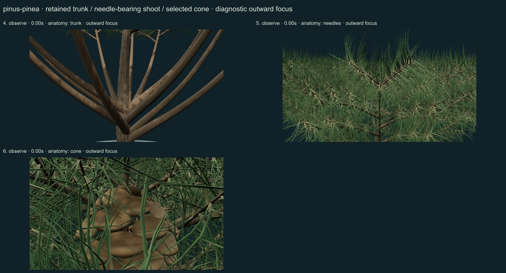
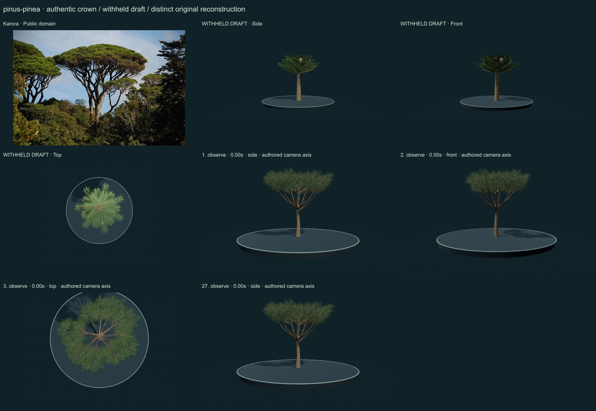
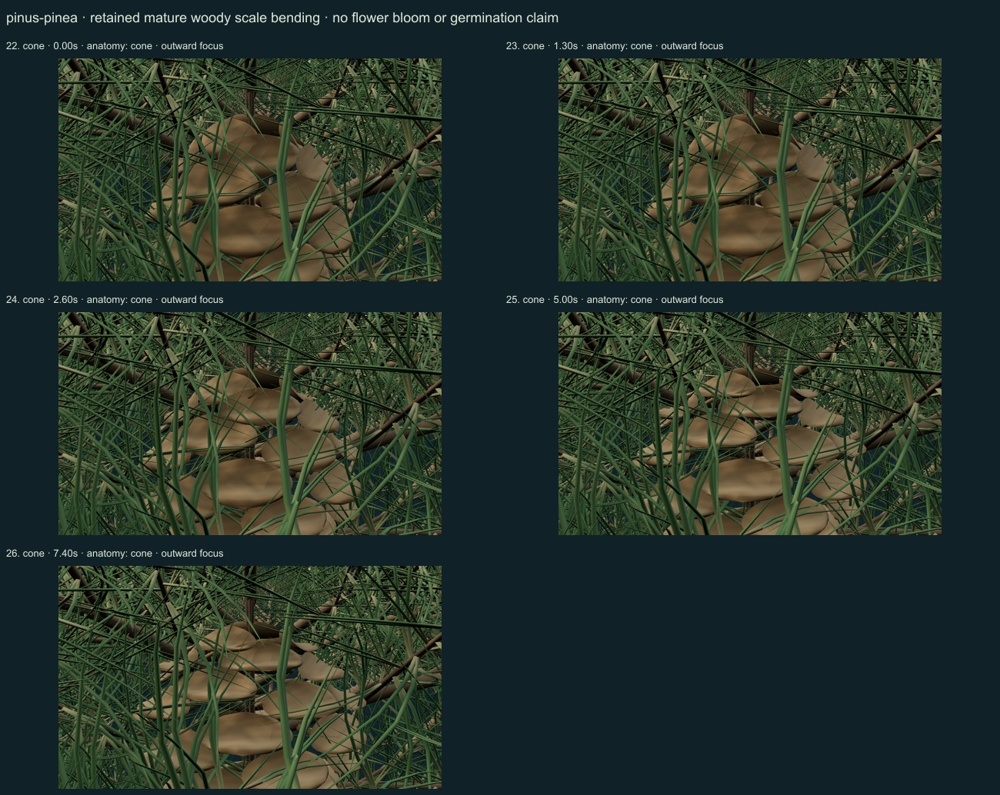
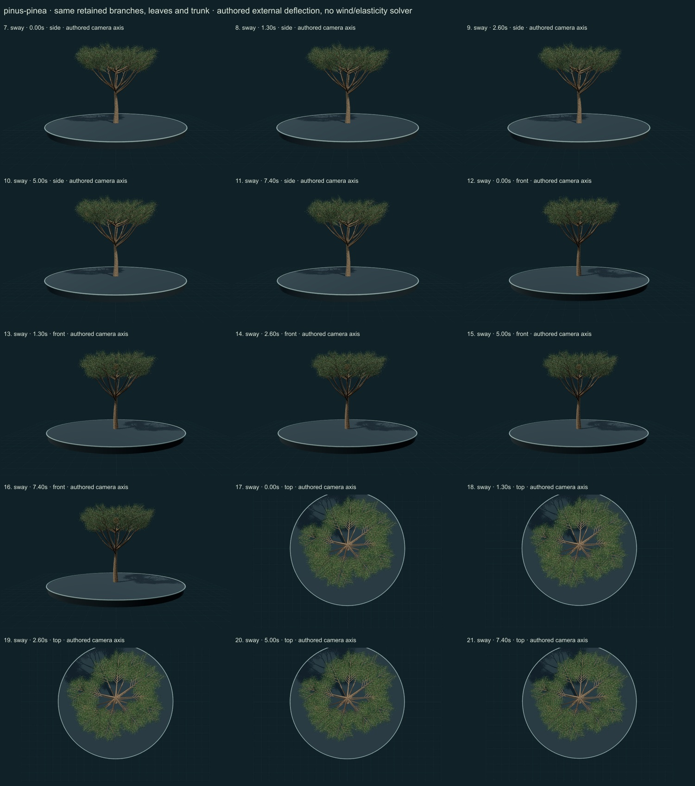

PhenoVoxel Archive · v0.6.23 · October 25, 2026
Stone pine
274 records after verified publication. 26 saved drafts remain held; 276 remain to 550, including 250 without a saved draft. Release register.
Selected actual institutional species diagnosis read for broad rounded crown, fissured bark, paired sheathed needles, pendent ovoid cones lacking terminal scale spines and a rudimentary seed wing. Cultivated/naturalized Australian records and uncertain ancient introductions are not mapped as a verified native range. Selected actual PDFpages2–4 read; page4/printed65 Figures1–3 including authentic male/female stage photographs viewed. Study concerns grafted trees in three Portuguese plots monitored during2012–2013. Selected mature brown cone opening is context for partial articulation; full reproductive phenology, timing, climate effects, male structures and seed development are not reconstructed or fitted. Selected primary Methods and needle-ontogeny passages read through accessible web text. Studied nursery-grown plants had solitary short primary needles distinct from later paired secondary needles with a basal sheath. No gas-exchange, monoterpene or age-specific numerical rates are fitted. Direct local HTML fetch returned403; no local full-paper reading is claimed.
Karora · Public domain. Source-labelled real organism reference; preparation, life-stage, location and selected phenotype do not establish all species variation or measured 3D anatomy. Resized inside 1000 px, flattened and JPEG encoded; no generative alteration.
Exact creator, license, source/download/local checksums and access scopes remain in the data. Additional copyrighted institutional photographs and primary figures were consulted privately and linked, not redistributed or sampled into materials.
Original radiating umbrella-like crown and tapered woody axes with individually modeled long paired needles and broad selected seed cones. Juvenile solitary primary needles are distinct from these adult secondary needle cues.
Original darker fissured bark, longer paired green needle surfaces and broad brown woody scale forms. Pigment, sheen and relief are authored rather than fitted to measured optics.
Remaining: The umbrella crown remains a selected simplified form, not a measured mature specimen. Cone inspection is partly obscured by retained needles; scale apophyses and seed cavities remain coarse. Bark relief, needle density, tissue optics, age variation and primary-to-secondary needle development remain incomplete.
The same trunk, branches, leaves and cones remain present. Working sway is small authored external branch deflection with anchored roots; no wind, stiffness, damping or physiological solver. Selected mature woody scale surfaces additionally bend during a monotonic authored study, without measured humidity, force or timing. Full germination and organ-by-organ seed-to-tree development remain unavailable; the adult crown is not resized into a false developmental sequence.
Partly stylized original educational reconstructions. Fine morphology, age variation, tissue optics, dimensions and environmental mechanics remain incomplete or unmeasured. No independent specialist validation, scientific certification or accuracy percentage. Software checks and screenshots do not establish biological validity.
27 actual nonblank final viewer states inspected on 4 labelled sheets. Side/front/top are authored whole-crown camera axes; outward focus is a separate diagnostic view. Qualitative author review, not independent scientific certification.




Partly stylized original educational reconstructions. Fine morphology, age variation, tissue optics, dimensions and environmental mechanics remain incomplete or unmeasured. No independent specialist validation, scientific certification or accuracy percentage. Software checks and screenshots do not establish biological validity. Prior 270 species objects and original wolf/tiger meshes unchanged. Occurrences and cultivated accessions are not native-range boundaries. Legacy Protista/Monera are reporting conveniences.
Exact findings, sources and screenshot hashes